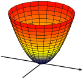

Print Preview
Worksheet 24 Quadratic Forms (LN 2.2, 2.3)
\(\textbf{Poll Question}\)
Hint: plot it in Desmos 3D! And: how does this exercise relate to symmetric matrices?
\({\large \textbf{Expressing Quadratic Forms in Terms of Symmetric Matrices}}\)
\(\textbf{Definition}\)
-
A quadratic form is a function: \(Q : \mathbb{R}^n \to \mathbb{R}\text{,}\) given by
\begin{equation*}
Q(\vec{x}) = \vec{x}^T A \vec{x} =
\begin{pmatrix}
x_1 \amp x_2 \amp \ldots \amp x_n
\end{pmatrix}
\begin{pmatrix}
a_{11} \amp a_{12} \amp \ldots \amp a_{1n} \\
a_{12} \amp a_{22} \amp \ldots \amp a_{2n} \\
\vdots \amp \vdots \amp \ddots \amp \vdots \\
a_{1n} \amp a_{2n} \amp \ldots \amp a_{nn}
\end{pmatrix}
\begin{pmatrix}
x_1 \\
x_2 \\
\vdots \\
x_n
\end{pmatrix}
\end{equation*}
-
Matrix \(A\) is \(n \times n\) and symmetric, and \(\vec{x}\) is a variable vector in \(\mathbb{R}^n\text{.}\)
Example: express \(Q = 3x_1^2 + x_2^2 + 8x_3^2 + 4x_1 x_2 - 6x_2 x_3\) in the form \(Q = x^T A x\text{.}\)
\({\large \textbf{24.2 The Principle Axes Theorem}}\)
\(\textbf{Theorem}\)
-
If \(A\) is a symmetric matrix then there exists an orthogonal change of variable \(\vec{x} = P \vec{y}\) that transforms \(\vec{x}^T\) to \(\vec{y}^T D \vec{y}\) with no cross-product terms.
Proof in the lecture videos/textbook
\(\textbf {24.2.1 Example}\)
-
Make a change of variable that transforms the quadratic form into another quadratic that has no cross-product terms.
\({\large \textbf{24.3 Classifying Quadratic Surfaces}}\)
Our goal: \(\textbf {solve optimization problems with quadratic functions}\text{.}\)
Take for example the surface:
\begin{equation*}
Q = x^2 + y^2 = \vec{x}^T
\begin{pmatrix}
1 \amp 0 \\
0 \amp 1
\end{pmatrix}
\vec{x}
\end{equation*}
If we set \(Q\) to be constant, \(Q = k^2\text{,}\) we obtain the equation of a circle whose radius is \(k^2\text{.}\)
\begin{equation*}
k^2 = x^2 + y^2
\end{equation*}

The surface above has a unique minimum at the origin. What about other surfaces?
\(\textbf{Definition}\)
-
A quadratic form \(Q\) is
-
\(\textbf{indefinite}\) when at least one eigenvalue is negative and at least one is positive.
\(\textbf{Theorem}\)
-
If \(A\) is a symmetric matrix with eigenvalues \(\lambda_i\text{,}\) then \(Q = \vec{x}^T A \vec{x}\) is
-
\(\textbf{positive definite}\) when all eigenvalues are positive
-
\(\textbf{negative definite}\) when all eigenvalues are negative
-
\(\textbf{indefinite}\) when at least one eigenvalue is negative and at least one is positive
-
\(\textbf {24.3.1 Example}\)
Assume \(\vec {x} \in \mathbb {R}^3\text{.}\) Construct the matrix of the quadratic form, and classify the quadratic form.
\begin{equation*}
Q = 4^2_3 - 2x_1 x_2
\end{equation*}